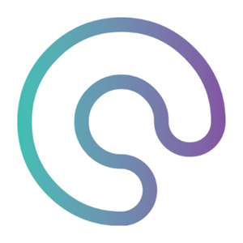

DigitalGuest
January 2019 - April 2019
Multimedia Intern
The internship was a part of my AP in Multimedia design, i started back in 2017. So the learning goals of the internship were evolved around the multimedia design programme. I mainly worked with the company's website, which i had to design and develop in a CMS system called Wordpress. I also had small tasks that included JavaScript to help the developer team. Furthermore i worked with video editing and graphic design to supplement the website and some content for the marketing.